P00 · Title
VISUAL GUIDE ONLY — positions, scale and UI details may be inaccurate. Follow the written camera/layout specification.
Start or continue saved run
P01 · Identity
VISUAL GUIDE ONLY — positions, scale and UI details may be inaccurate. Follow the written camera/layout specification.
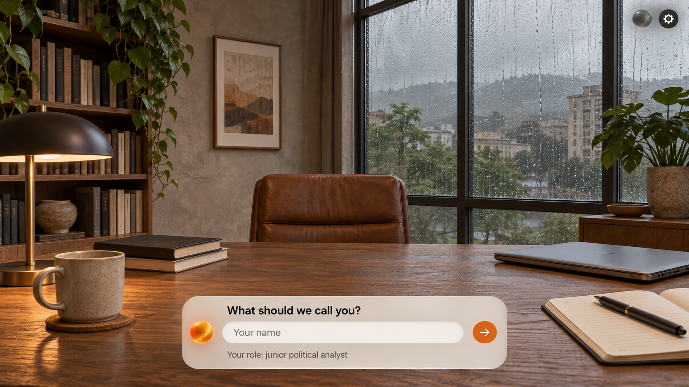
Type name into compact composer
P02 · Declaration and situation briefing
VISUAL GUIDE ONLY — positions, scale and UI details may be inaccurate. Follow the written camera/layout specification.
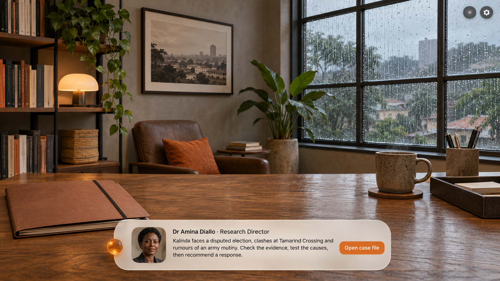
Declare the role’s connection, hear/read Diallo, open case file
P03 · Document reading and tagging
VISUAL GUIDE ONLY — positions, scale and UI details may be inaccurate. Follow the written camera/layout specification.
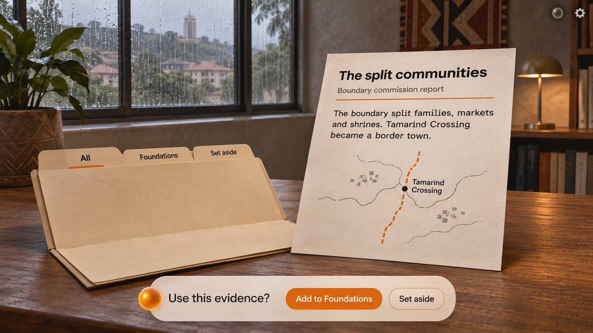
Read one source, select Foundations or Set aside, then Next
P04 · Foundations review
VISUAL GUIDE ONLY — positions, scale and UI details may be inaccurate. Follow the written camera/layout specification.
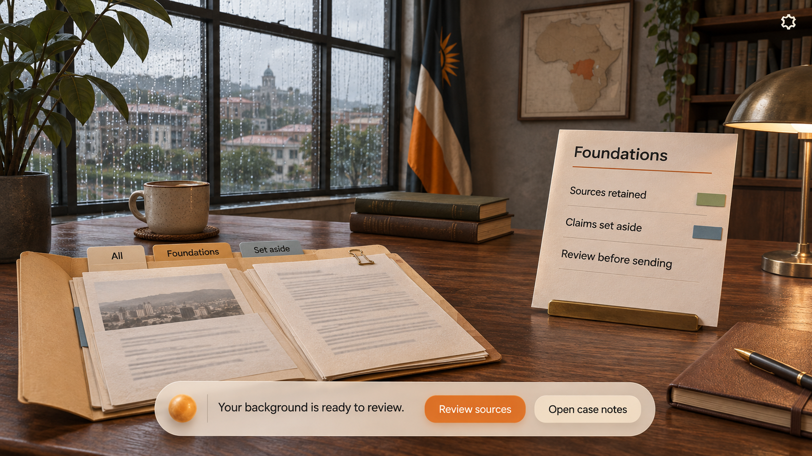
Review retained/set-aside sources; open case notes
P05 · Case notes and model choices
VISUAL GUIDE ONLY — positions, scale and UI details may be inaccurate. Follow the written camera/layout specification.
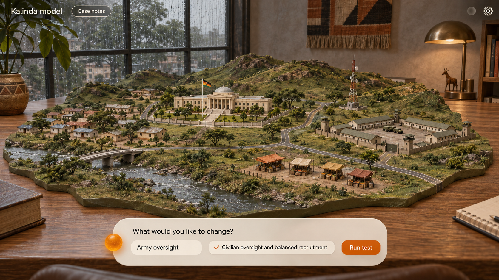
Read seven notes/base headlines; select factors and confirm alternatives
P06 · Model running
VISUAL GUIDE ONLY — positions, scale and UI details may be inaccurate. Follow the written camera/layout specification.
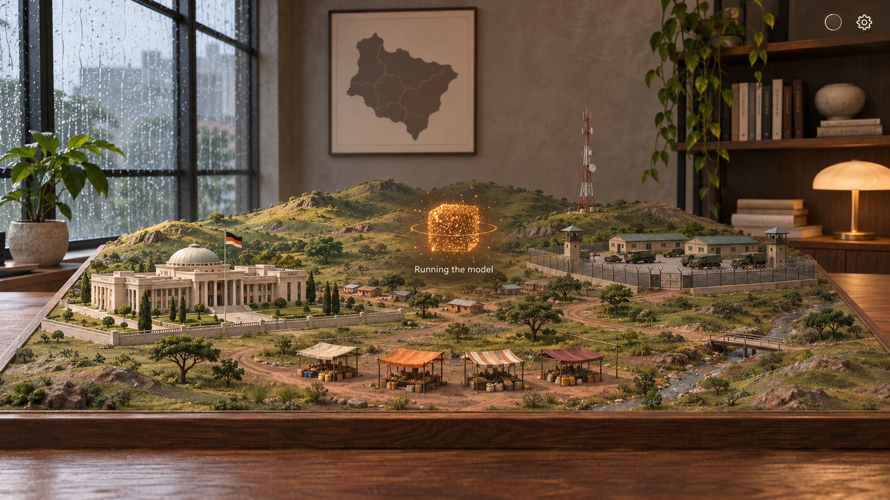
Watch brief particle morph or skip animation
P07 · Headlines and comparison
VISUAL GUIDE ONLY — positions, scale and UI details may be inaccurate. Follow the written camera/layout specification.
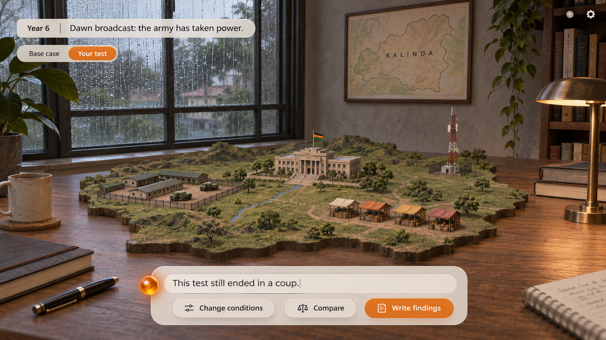
Step through five dated headlines; compare same year across runs
P08 · Findings and Diallo reply
VISUAL GUIDE ONLY — positions, scale and UI details may be inaccurate. Follow the written camera/layout specification.
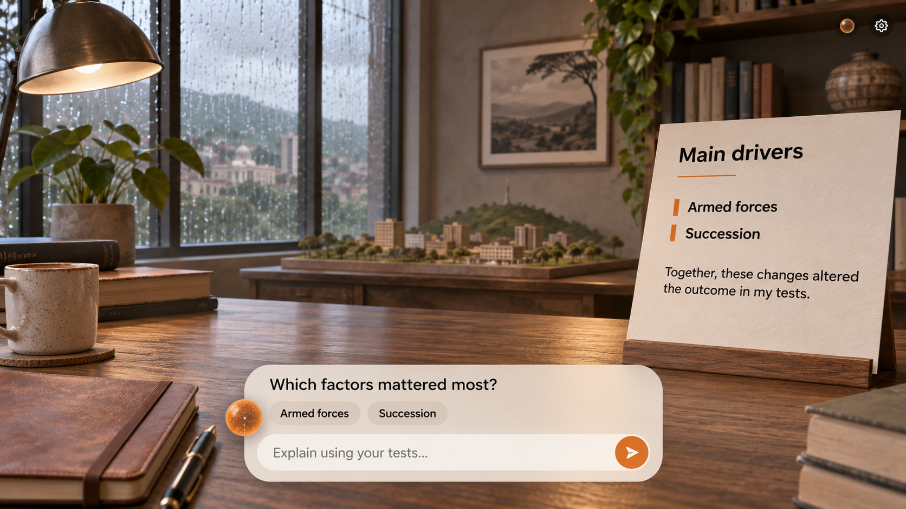
Choose up to three factors; type a sentence; send
P09 · School hall briefing
VISUAL GUIDE ONLY — positions, scale and UI details may be inaccurate. Follow the written camera/layout specification.
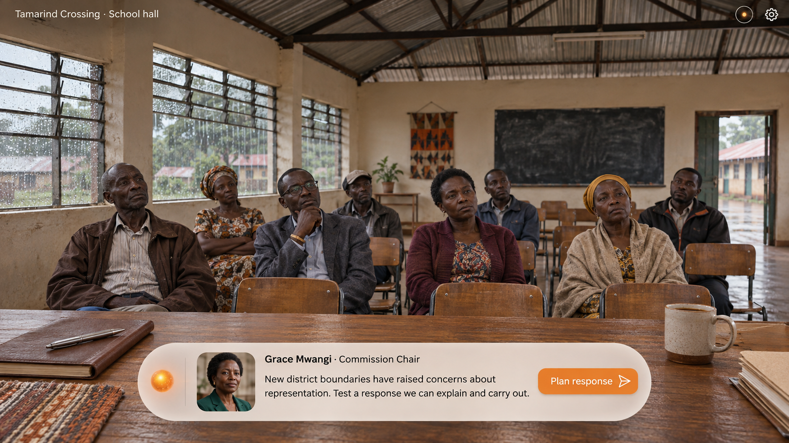
Read/hear Chair and climate-dependent press reaction
P10 · Response choices
VISUAL GUIDE ONLY — positions, scale and UI details may be inaccurate. Follow the written camera/layout specification.
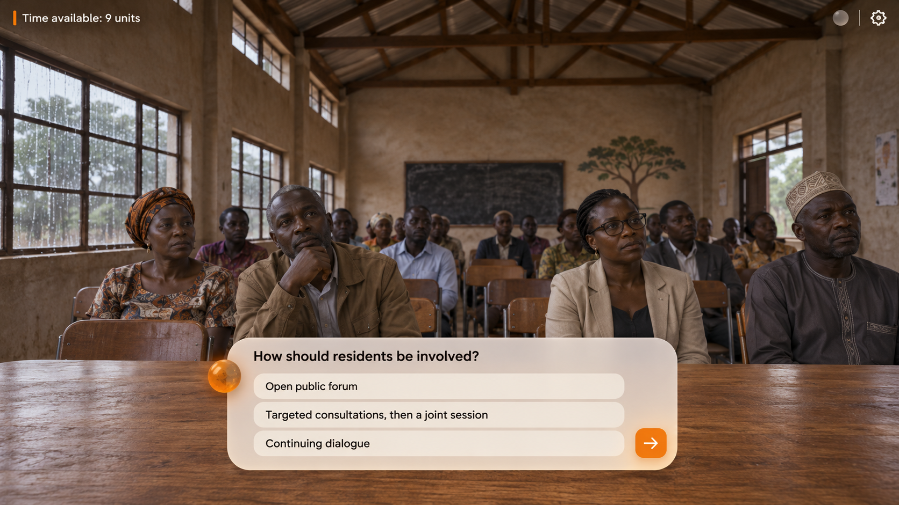
Choose one setting for each of five levers
P11 · Test, rationale and Dialogue reaction
VISUAL GUIDE ONLY — positions, scale and UI details may be inaccurate. Follow the written camera/layout specification.
Run test; inspect words; revise; write trade-off/uncertainty rationale; submit
P12 · Chair’s request
VISUAL GUIDE ONLY — positions, scale and UI details may be inaccurate. Follow the written camera/layout specification.
Choose record or typed briefing
P13 · Briefing and review
VISUAL GUIDE ONLY — positions, scale and UI details may be inaccurate. Follow the written camera/layout specification.
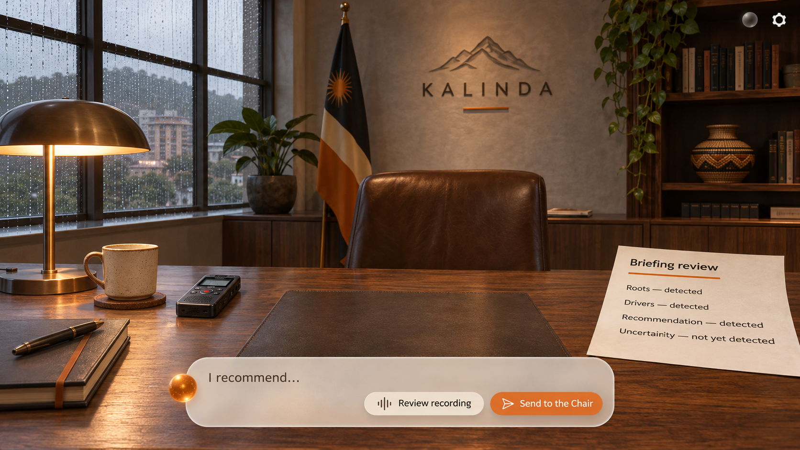
Record/stop/play/delete/re-record OR type; review four topic indicators; send
P14 · Debrief and restart
VISUAL GUIDE ONLY — positions, scale and UI details may be inaccurate. Follow the written camera/layout specification.
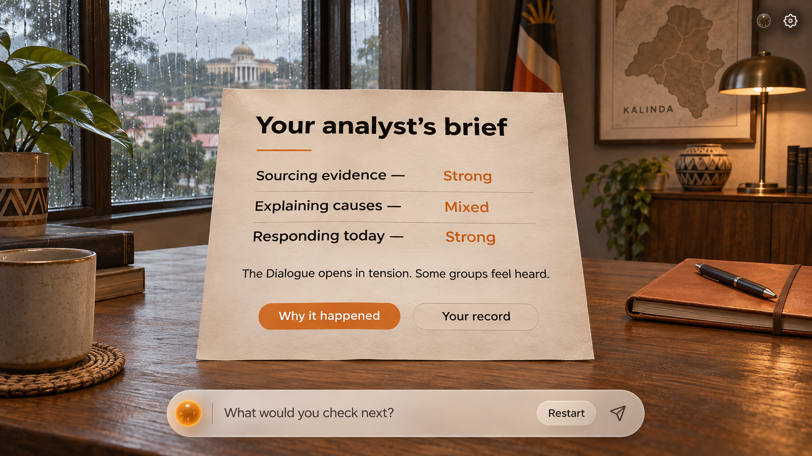
Read three strands and forward view; open why/record/reflection; restart